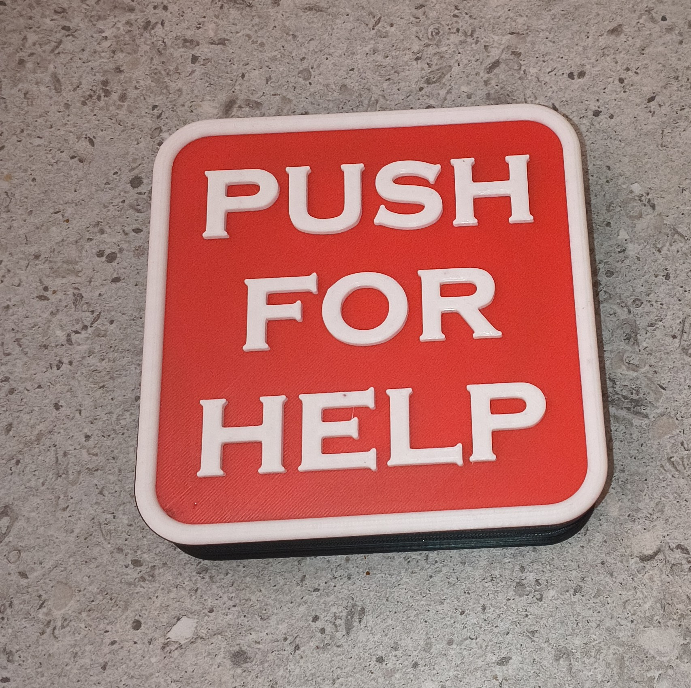
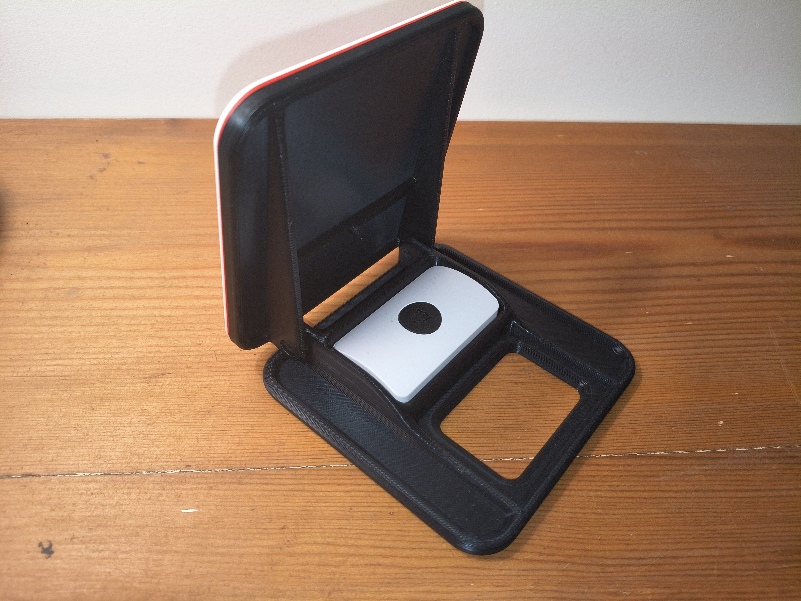
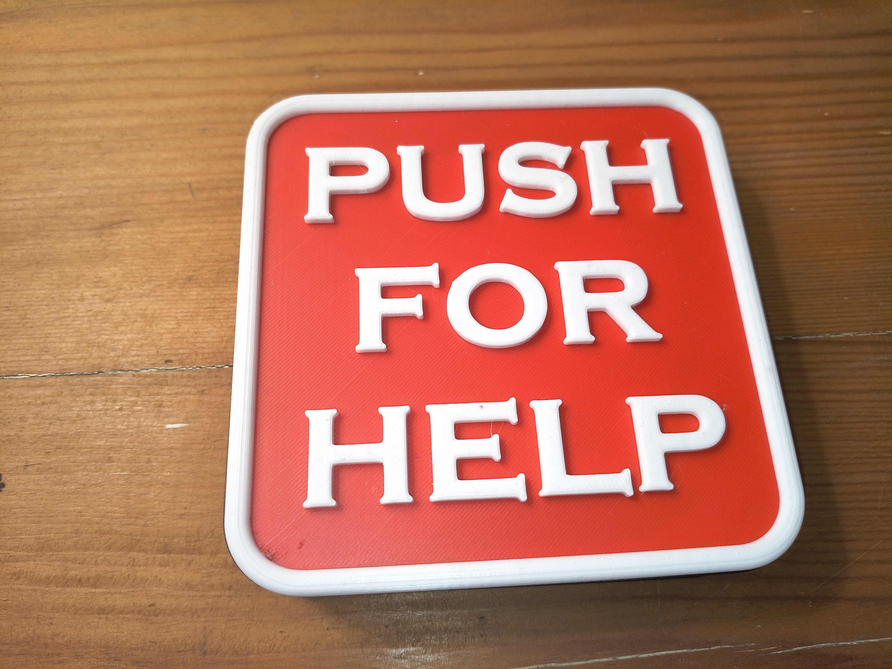
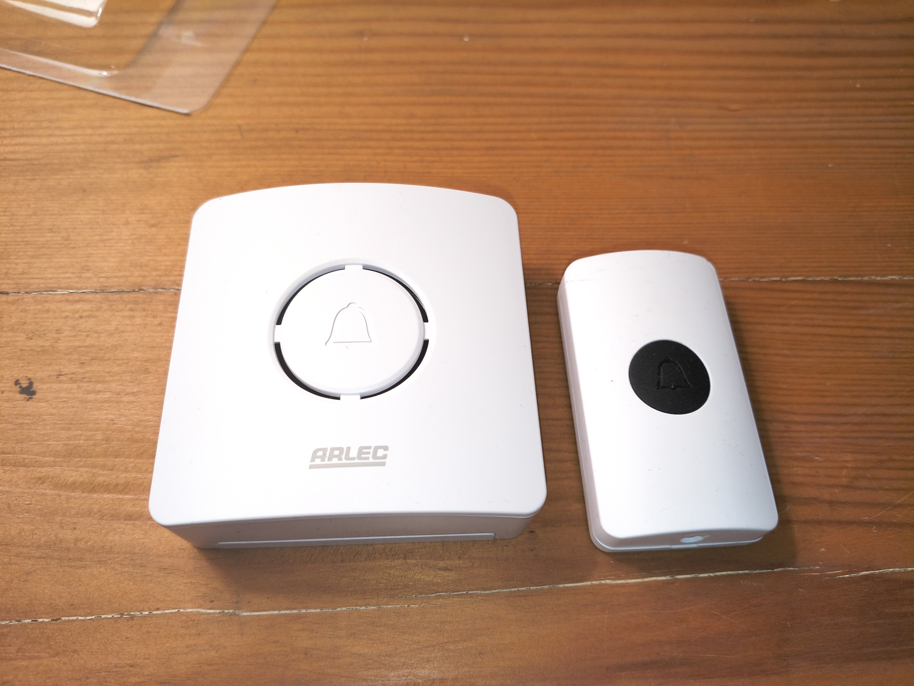

Assistive device · Open-source project
Wireless Caregiver Call Button
A 3D printable enclosure that converts an inexpensive wireless doorbell into a large, intuitive call button for someone requiring assistance at home.

The problem
When my father's dementia progressed rapidly, one of the immediate practical problems was allowing him to summon my mother when he needed assistance.
A cheap wireless doorbell already provided a reliable transmitter and receiver, but its small button relied on the user remembering what the device was for and being able to press it accurately.
The design challenge was therefore not the electronics. It was making an existing product easier to understand and easier to operate.
The design
The enclosure houses an off-the-shelf Arlec DC166 wireless doorbell transmitter without modifying its electronics.
Pressing anywhere on the large front paddle causes it to pivot on two screws and press the original doorbell button underneath.
The result is a large, high-visibility control that is much easier to identify and operate than the original transmitter.

The original wireless transmitter drops into the printed base without tools or electrical modification.
Design goals
Functional requirements
- Simple and intuitive operation
- Large target area
- Reduced dexterity and strength requirements
- High visual contrast
- Reliable wireless operation
Manufacturing requirements
- No soldering or electronics modification
- Three 3D printed parts
- Only two M4×6 screws required
- Suitable for a 0.4 mm nozzle
- Easy to reproduce using common materials
Prototype outcome
The prototype demonstrated successfully that a simple mechanical enclosure could turn a low-cost consumer doorbell into a more usable assistive device.
The large paddle provided mechanical advantage and allowed the user to press almost anywhere on the face rather than locating a small button.
One improvement identified during testing was the addition of an over-travel stop to prevent excessive force being transferred to the original doorbell button.
Gallery


Technical details
- Overall face size: approximately 120 × 120 mm
- Compatible transmitter: Arlec DC166
- Pivot hardware: 2 × M4×6 socket-head cap screws
- Layer height used: 0.2 mm
- Nozzle used: 0.4 mm
- Material used: PLA+
- Licence: MIT-0
Downloads
All design files are released under the CERN Open Hardware Licence v2 (Permissive). They are free to use, modify and manufacture.
Editable CAD model of the complete assembly.
Download STEPDimensioned engineering drawing in PDF format.
Download DrawingReady-to-print STL files for all printed components.
Download STLsHardware list, print settings and required tools.
View BOMOverview, assembly notes and project information.
View READMECERN Open Hardware Licence Version 2 – Permissive.
View LicenceDevelopment Notes
Developed to improve the usability of an inexpensive wireless doorbell as a caregiver call button. The design deliberately avoids modifying the original electronics, focusing instead on accessibility, simplicity and speed/ease of manufacture. Future development could include overtravel protection and mounting options.